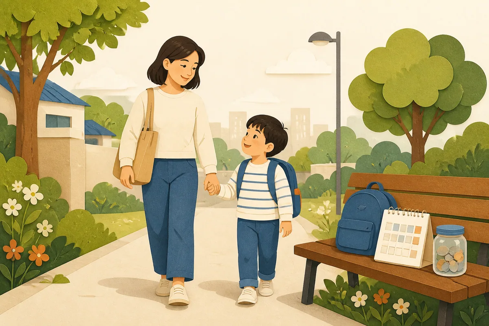

기저귀·조제분유 지원사업은 만 2세 미만 영아가 있는 저소득층 가정의 양육 필수재 부담을 낮추기 위한 국민행복카드 바우처입니다. 기저귀 지원과 조제분유 지원은 대상 조건이 다르며, 조제분유는 기저귀 지원 대상 중 별도 사유가 있을 때만 받을 수 있습니다. 출생 직후 신청 시점에 따라 지원 가능 개월 수가 달라질 수 있어 빠르게 확인하는 것이 좋습니다.
목차
지원 대상

기저귀 지원은 만 2세 미만 영아를 둔 기초생활보장 수급가구, 차상위계층, 한부모가족 지원대상 가구가 기본 대상입니다. 기준 중위소득 80% 이하의 장애인 가구나 다자녀 가구도 확인 대상에 포함됩니다. 조제분유는 기저귀 지원 대상 중 산모의 질병·사망 등으로 모유수유가 어렵거나 부자·조손가정 등 별도 사유가 있을 때 지원됩니다.
신청 기간
지원은 영아 출생 후 만 2세 미만까지 최대 24개월 범위에서 이어집니다. 바우처 포인트는 일정 주기로 생성되며, 신청이 늦어지면 이미 지난 기간 전체가 소급되지 않을 수 있습니다. 출생신고와 건강보험, 한부모 또는 차상위 자격 확인이 정리되는 대로 신청 가능 여부를 확인하세요.
지원 금액
2026년 복지로 사업 안내 기준으로 기저귀는 월 90,000원, 조제분유는 월 110,000원 구매 비용을 국민행복카드 바우처 포인트로 지원합니다. 두 항목을 모두 받는 경우 사용처와 잔액 관리가 중요하며, 포인트는 지정 판매점과 카드사 기준에 따라 사용할 수 있습니다.
기저귀와 조제분유는 지원 사유가 다르므로 한 항목을 받는다고 해서 다른 항목이 자동으로 함께 결정되지는 않습니다. 조제분유는 의사진단서나 가족관계 확인처럼 별도 사유 증빙이 필요할 수 있어 보건소에 먼저 확인하세요.
신청 방법
온라인 또는 방문 신청
영아의 주민등록 주소지 관할 보건소 방문 또는 복지로 온라인 신청으로 접수합니다. 국민행복카드가 없으면 카드 발급 절차도 함께 확인해야 합니다.
대상 확인과 결정
대상 자격과 영아 정보가 확인되면 바우처가 생성됩니다. 카드사, 판매점, 품목 제한이 있으므로 실제 구매 전 이용 가능한 판매처와 잔액 조회 방법을 확인하세요.
필요 서류
신분증, 가족관계와 영아 출생 확인 자료, 수급자·차상위·한부모 자격 확인 자료, 장애 또는 다자녀 기준 확인 자료가 필요할 수 있습니다. 조제분유는 산모의 질병 등 사유를 입증하는 진단서나 관련 서류가 추가될 수 있습니다.
주의사항
기저귀 지원 대상이라고 해서 조제분유가 자동으로 함께 지원되는 것은 아닙니다. 조제분유는 사유 확인이 별도로 필요합니다. 또한 포인트 사용처가 제한될 수 있으므로 온라인·오프라인 판매점과 카드사별 사용 가능 여부를 먼저 확인해야 합니다.
자주 묻는 질문
기저귀만 받고 조제분유는 못 받을 수도 있나요?
네. 조제분유는 기저귀 지원 대상 중 모유수유가 어렵거나 부자·조손가정 등 별도 사유가 있을 때 지원됩니다.
국민행복카드가 꼭 필요한가요?
바우처 포인트를 쓰려면 국민행복카드가 필요합니다. 기존 카드가 있는 경우 사용 가능 여부를 확인하고, 없으면 카드 발급을 함께 진행하세요.
공식 신청처와 문의처
공식 안내는 복지로 기저귀·조제분유 지원사업 안내에서 확인합니다. 실제 신청은 영아 주민등록 주소지 보건소 또는 복지로에서 진행하며, 판매점 정보는 복지로 바우처 판매점 안내를 참고하세요. 최종 확인일은 2026년 8월 27일입니다.